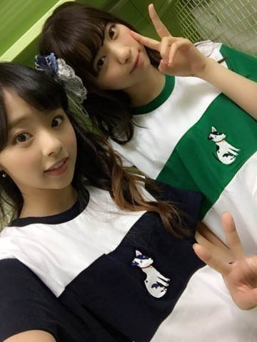
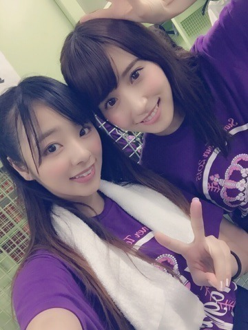
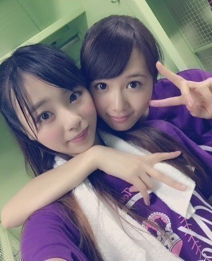
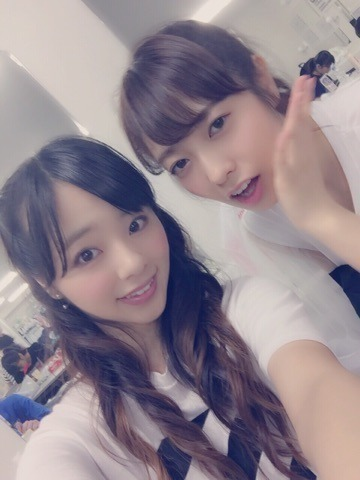
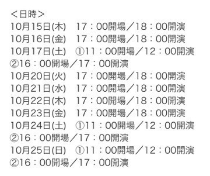
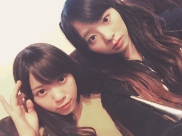

| 2015/09 07 Mon | 川村真洋 3日後,9/10にヤングギター発売です♡ノ まひろ |
おつかれさまです♡ノ
川村 まひろです.＊
真夏の全国ツアー,無事完走しました‼︎
おつかれさまでした,そして皆さん本当にありがとうございました‼︎
なあまに。

30日,七瀬からお揃いのTシャツを貰いました⊂((・x・))⊃ 私が紺、七瀬が緑。
特に誕生日とかそんなんじゃないんだけど,お店で『あ,,まひろっぽい』と思ってわざわざ買ってくれたみたいです（ ; ; ）♡
めちゃ嬉しいよ～。
貰って次の日速攻,お揃いでLIVEのリハやりました。いろんな人に「その服可愛いね～」って言われたよん。ほんまありがとう七瀬♡
日本各地を巡ってラスト東京‼︎
沢山の方が集まってくれました。
LIVEの最後の最後にメンバー全員,イヤモニを外し,会場に響き渡る皆さんの声を聞きました。 あの時の感動は忘れられません(*^^*)
LIVE直後に撮った写真。
まにみさ

まにらりん

これは大阪♡ まにゆうり

そしてLIVE中にサプライズ発表されました。
『アンダーLIVE 4thシーズン』が決定しました‼︎
モバイル会員さんの先行予約もスタートしています。一般受付は9月26日スタート。
是非是非！皆さん！！
アンダーLIVE来てくださいね！
強制参加♡(*^^*)
絶対だよ～～～♡笑ノ
日程はこんな感じです。

そして,皆さんに早く言いたくてウズウズしていたのですが... なんと、、、なんと、、
『YOUNG GUITAR』という雑誌の連載が決まりました！！！！☆
ヤングギターが決まった時,私ももちろんすごくすごく嬉しくて喜んだのですが,それよりも周りのスタッフさん方がすごく喜んでくださりました(*^^*)
本気でがんばります.
よろしくお願いします♡
親世代から有名な雑誌なので,両親も昔買っていたらしくすごく喜んでくれました。
私の連載タイトルは,
『ろってぃーのRoad to Guitar Heroine』にしました☆！！！
今月の9月10日発売です！
本屋さんで売っていますので,是非見つけてください⊂((・x・))⊃♡♡
よろしくお願いします。
打ち上げ中,皆のテンションについていけず ずっとソファから離れない私の隣りに居てくれる七瀬♡ ぱしゃり.

以上♡
Blog更新完了．ノ